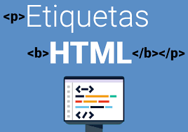

Acerca de...
En el curso se estuvo viendo mucha infrmacion relevante sobre la carera de programacion, desde como inicia la estructura de una pagina web hasta como hacer una anmacion en dichas paginas, se no enseño a la famosa (Maquetación) la cula si esto lo lee el profe day sabra de lo que hablo, al principio es un tema complejo ya que como en todo es algo nueov, al principio en primer parcial al chile no entendi nada, pero con el tiempo y las practicas asi como la prueba y error de dichas aprendi a hacer las cosas de manera correcta o eso creo, pero en din aprendia programar de muchas formas, pero como lo dijo usted Ing Dany cada uno de nosotros del salon sabe lo que tenemos que hacer y sabemos que cada uno de nosotros al realizar su respectiva programacion lo hace de manera distinta, muchos de nosotros sabemos que cada uno de mis compañeros piensan de distinta manera por lo que programar es la mismas situacion, en conclucion si aprendi sobre todo lo que es Visual Studio Code como las distintas cajas, los divs, los botones asi como los links entre una infinidad de cosas que usted nos enseño.
Temas que vimos :
Los temas que estuvimos viendo durante todo el semestre fueron las variables en css, estructuras HTML, el tema del posicionamiento dentro de las paginas web,que es y cuales son las aplicaciones web, que es Visual Studio Code, para que sirve este mismo, las etiquetas HTML, que es sublime text, cual es la estructura basica de una pagina web, como poner una imagen en HTML y en CSS al igual que como poner videos, sonidos etc... todas estas cosas nos ayudaron avanzar a lo que es la programacion de las paginas web, sin mencionar que las cosas antes mencionadas son algunas pocas de muchas que me faltaon, sin embargo tengo en claro para que sirve cada una de ellas y en que momento las puedo y tengo que utilizar.

Lo que me gusto :
Lo que me gusto demaciado de este semestre fueron las formas en las que tenemos que aprender, por medio de investigacion ya que de esta manera uno se puede dar cuenta de la cantidad inmensa de informacion relevante que existen sobre un mismo tema ademas de como las practicas guiadas se elaboraron poco a poco, ya que el Ing Dany nos preguntaba cada cierto tiempo sobre si nos atrasabamos o si teniamos alguna duda, sobre todo esto lo que me gusto fue las nuevas cosas que aprendimos, ya que hace como medio año yo me preguntaba y tenia la duda sobre como o quien elaboraba las paginas web, hoy en dia me siento orgulloso de decir que yo ya se como se hacen ademas de que yo puedo hacer las paginas web, y no solo eso, si no ambien me quedo satisfecho de saber que en algun futuro esto lo puedo utilizar como negocio, en conclucion estuvo el semestre.